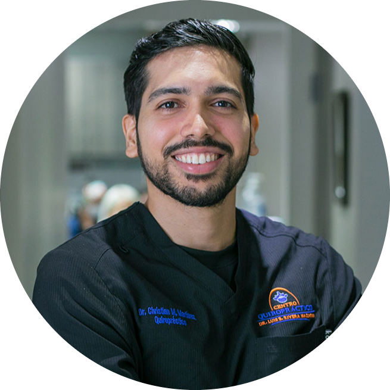

|  | Christian M. Martinez Jimenez, DCDoctor of Chiropractic Associate Clinician,Quiroplaza LLC Founder of PrimeSpine Chiropractic |
Currently providing Chiropractic services to the community of San Juan and Trujillo Alto has given me the opportunity to hone and develop skills and techniques to further improve the wellbeing of my patients.
Founder of PrimeSpine Chiropractic in February 2018 after receiving my Chiropractic license in Puerto Rico. Adjustment types vary to best benefit the patient. The techniques used are Diversified, Thompson Drop Techniques and Activator, I also adjust extremities in the body. I have experience with EHR, using SmartCloud on my internships in New York Chiropractic College
Currently providing chiropractic services to the Piratas has given me experience to handle elite athletes on a high level basis. Being a high contact sport, players provide the opportunity to work on their bodies, from adjustments to modalities. It also gives a different population perspective since this athletes are more robust and developed in height and weight.
Since obtaining my license in Puerto Rico I have been working on different clinics around the country, gaining experience on different environments and settings in clinics across the island. These include, Clínica Quiropráctica del Norte (Arecibo, PR), Wellness Health Center (Aguadilla, PR), Grupo Quiropráctico Paseos (Guaynabo, PR) and Centro Quiropractico Dr. Rojas (Vega Baja, PR). Running the clinics by myself or with clinicians
During three trimesters I was able to perform different chiropractic techniques like, Diversified, Thompson and Activator on patients coming to this clinic, providing a high quality of care. Charting notes, insurance verification, therapies, passive modalities, treatment plans,diagnosing and educating the patients was part of my duties as an intern.
During two trimesters we adjusted student patients and regular patients. I had preparation in EHR, charting notes, treatment plans, report of findings, x-ray reports, patient care, diagnosis and scheduling was all part of my duties. Adjusting techniques were, Diversified (Full Spine), Thompson Drop Techniques and Activator
A complete experience on my growth as a human being. I was exposed to multiple changes in a short amount of time. Here I was able to learn and apply the necessary skills to perform on a high level, from the challenged way of thinking and intellect, to the ever changing culture on the college campus.
While in school, I wanted to make sure that I could proficiently learn and apply the tools needed to give the best quality of care to my patients. I utilized this opportunity learn all the techniques possible. Being able to make sure to have all the possible knowledge since every patient is a different case. This determination helped me to deliver the best care possible and was reflected on my results being an part of the honor society in school.
| Dates | Work |
|---|---|
| 2019-2023 | Chiropractic Associate, Chiropractic Piratas de Quebradillas |
| 2018 | PrimeSpine Chiro, Freelancing |
| 2017 | Chiropractic Intership, Depew Health Center |
| 2016 | Chiropractic Clerkship, Seneca Falls Health Center |
| Skills | Rating |
|---|---|
| Adjusting Technique | ✨✨✨✨✨ |
| Dexteriy | ✨✨✨✨✨ |
| Decision Making | ✨✨✨✨✨ |
| Communication | ✨✨✨✨✨ |
| Empathy | ✨✨✨✨✨ |
| Reason and Problem Solving | ✨✨✨✨✨ |